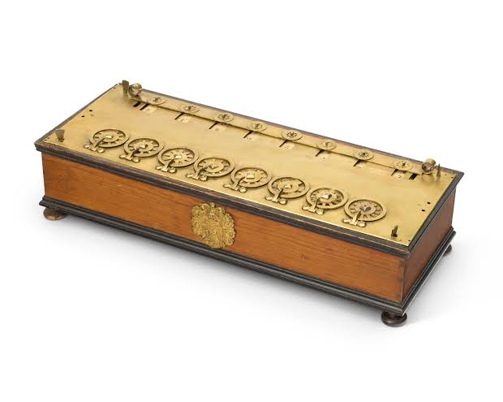
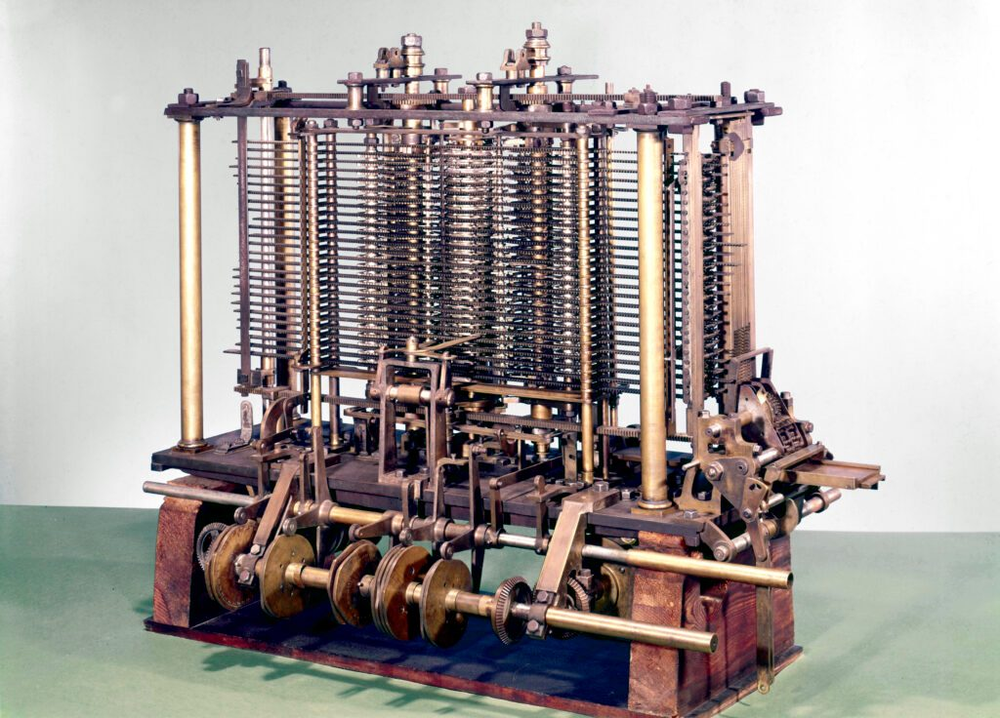
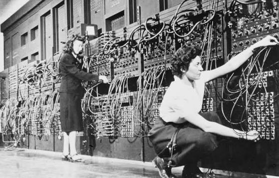

Last session ended with a procedure that requires no cleverness at all. Every step is mechanical. So let us find out what happens when a person actually runs one.
No phones. No calculators. You know the method. You have known it since you were nine.
Some of you got something else. Some are not sure. Some stopped.
Nobody here is bad at multiplication. You have all done this correctly hundreds of times.
So why did it go wrong?
Count exactly how many chances there were.
64 single digit multiplications.
64 carries inside the rows.
112 additions to stack the rows up.
About 240 elementary operations, and one slip anywhere ruins all of it.
Right ninety nine times out of a hundred, and still a one in eleven chance of finishing that multiplication correctly.
That was step one, after a night's sleep, on the first problem of the day.
Now do forty of these. Now do them for eight hours. Now do that every day for a year, for a wage, on somebody else's numbers, with no way of checking.
The procedure is fine. The procedure always works.
The problem is that a human has to run it.
It described a person. Usually a room full of them, each handed one column of one table, working through it by hand, all day.
Observatories, navies, insurance offices, artillery ranges, census bureaus, and later NASA.
The word we use for the machine on your desk is a job description taken from the people it replaced.
Nautical almanacs, logarithm tables, tide tables, firing tables. Printed, bound, and trusted absolutely by people who could not check them.
And they were full of errors, made by tired humans running two hundred and forty step procedures, thousands of times over.
One wrong digit in a printed table puts a ship on rocks, years later, hundreds of miles away, and nobody ever traces it back.
Charles Babbage, checking one set of astronomical tables against another, finding error after error, is said to have burst out:
The whole idea of this course, stated two hundred years ago, out of pure irritation.
Three hundred years of people trying exactly that. Your job for the next ten minutes is to spot the one thing every single one of them assumed without noticing.
Blaise Pascal, nineteen years old, builds a gear machine so his father can stop doing tax arithmetic by hand.

Each wheel has ten teeth, one per digit.
Turn the units wheel past nine and a linkage physically nudges the wheel beside it by one place.
That is a carry, made of metal. Step it from eight to nine to ten and watch the link fire.
The wheel is not approximately at seven. It is at seven, because the metal cannot rest anywhere else.
Knock the table. Leave it a century. Run it in the cold. Still seven.
Ten states cost nothing when each state is a place a piece of metal can physically sit.
Remember that sentence. In about ten minutes it stops being true, and that is the whole hour.
A brass cylinder with nine ridges running along it, each one longer than the last.
Slide the gear towards the short end and fewer ridges are long enough to reach it. Slide it back and more of them do.
One full turn of the drum strikes the gear once per ridge that reaches it. Set the gear so seven reach, turn the handle, and the counter goes up by seven.
Leibniz invented binary arithmetic in 1679 and published it in 1703. Then he built this, in base ten, and never connected the two.
The Difference Engine computes and prints mathematical tables, taking the human out of the typesetting too, because that is where errors crept in as well.
Thirty one decimal digits of precision. Gears, all the way down.

The gaps grow. But the gaps between the gaps never change. They are two, forever, and you did not need to multiply anything to find that out.
Every turn of the handle does two additions, in this order. Add the first difference into the value. Then add the second difference into the first.
The machine has no idea what a square is. It cannot multiply. It adds two numbers, twice per turn of the handle, and a table of squares falls out of it.
The Difference Engine was begun in 1823 with government money, consumed over £17,000 of it, and was abandoned unfinished in 1842.
The Analytical Engine, the general purpose one with a store, a mill and punched cards, was never built at all. It exists as drawings.
In 1991 the Science Museum in London finally built Difference Engine No. 2 from his own drawings.
Eight thousand parts. Five tonnes. It works, and it is correct to all thirty one digits.
He was right. He was a hundred and fifty years early, and he never saw it run.
Every answer a household gives becomes a hole punched in one column of one card.
The card slides under a row of pins. Where there is a hole the pin drops through and closes a circuit, and the counter for that column steps by one. Where there is card, the pin stops.
Nobody reads anything. Nobody adds anything up. The population counts itself.
Seventeen thousand vacuum tubes. Thirty tons. Nothing moves in the arithmetic. A thousand times faster than anything before it.
And it counted in decimal.

Each decimal digit was a ring of ten flip flops, with exactly one of them on at a time.
Every one of those flip flops has two states. Ten two state devices, wired in a circle, imitating one ten position wheel that no longer physically exists.
Compare that with the Pascaline eight slides ago. Same picture. Same carry. No metal.
Not one of them sat down and compared bases. Decimal was not selected. It was inherited, from a species that happens to have ten fingers.
It was so obviously how numbers work that questioning it did not occur to anybody, including the man who had already invented the alternative.
And for three of those centuries it cost nothing, because a gear tooth is a physical stop.
An electronic machine does not hold a digit as a position. It holds it as a voltage.
Voltage is continuous. It has no notches. It can sit anywhere, and it drifts.
So a question that never needed asking for three hundred years suddenly has to be answered.
How many voltage levels can you reliably tell apart on one wire?
Ten levels means nine gaps between them.
Five volts divided by nine is about 556 mV from one level to the next.
The decision point sits halfway. So a signal may drift by 278 mV before it is read as the wrong digit.
That is the entire budget. Two hundred and seventy eight millivolts, for everything that could possibly go wrong.
| Resistor tolerance, five percent | up to 250 mV |
| Supply rail variation | up to 250 mV |
| Temperature drift across the part | tens of mV |
| Crosstalk from the wire next to it | tens of mV |
| Thermal noise, ground bounce, ageing | more |
| You had | 278 mV |
The very first line already spends the whole budget.
And nothing has been built, connected, warmed up, or run for ten years yet.
Nothing else changes. Same five volts, same wire, same components, same noise.
The gap goes from 278 mV to 2500 mV.
Nine times the immunity, free, from a decision that costs nothing except giving up the habit of counting in tens.
And two is the floor. One level carries no information at all, so there is nowhere further to go.
A wire can now say exactly one of two things. So the machine's entire alphabet is 0 and 1.
Which means every number inside it has to be written in base two. Not by choice. By what a wire can hold.
Nothing in that argument was about numbers. No proof, no elegance, no property of base two that base seven lacks.
Arithmetic works identically in every base, and in three classes we will prove that properly.
Binary won on noise margins.
An engineering answer to a physics problem, and it would have been the wrong answer in 1642, when the stop was made of metal.
It took that long to arrive at ten symbols, position and a zero, so that a person could compute without being clever.
The machine now refuses to use any of it.
Binary is obviously right for the hardware.
Binary is obviously wrong for the human.
A representation that is perfect for the wire and useless to the person holding it, with a pile of conversion machinery in between that nobody asked for.